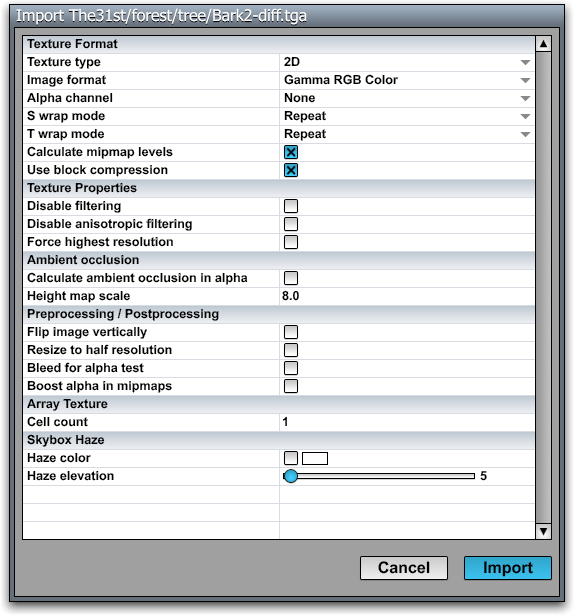
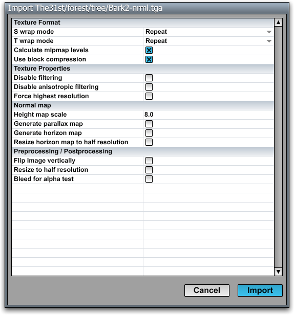

Texture Importer
Texture maps used by the C4 Engine have the .tex file extension. These texture map resources are created by importing texture images from a subdirectory of the Import directory using the Texture Importer tool.
The Texture Importer tool supports .tga files, which may be in 8-bit grayscale, 16-bit color, 24-bit color, or 32-bit color format, with or without RLE compression.
When a texture is imported, a .cfg file is created in the same folder as the imported texture, and it contains all of the settings that were applied. This file is recognized the next time the texture is imported and used to populate the Import Texture dialog with the settings that were previously used.
Note: All resources imported into the C4 Engine should be placed in a subfolder of the Import folder, not directly in the Import folder itself.
Texture Maps

To import a texture, either choose Import Texture from the C4 Menu or invoke the itexture [name] command in the Command Console. If the menu command is chosen, or the name is omitted from the console command, then the Texture Importer tool will open an Import Texture dialog that lets you select a .tga file from a subdirectory of the Import directory. After selecting an image file to import, the Import dialog is opened with the default settings shown in the following figure. These default settings are usually appropriate for ordinary color texture maps.
Texture Map Import Settings
|
Setting |
Description |
|
Texture Format |
|
|
Texture type |
Selects the OpenGL texture target for this texture map. It can be one of the following values.
|
|
Image format |
Selects the output pixel format for this texture map. It can be one of the following values.
|
|
Alpha channel |
Specifies what kind of information is stored in the alpha channel of the texture. It can be one of the following values. (If alpha channel information is specified, then the TGA file being imported must use a 32-bit format.)
|
|
S wrap mode T wrap mode |
Specifies what wrap modes to apply to the texture map. They can each be one of the following values.
|
|
Use block compression |
The output texture is stored in a hardware-recognized compression format. This should be turned on for almost all texture maps for best performance and memory usage. (This setting is ignored if the image format is not RGBA Color, if the width and height of the image are not both multiples of 4, or if generating a normal map with parallax data.) |
|
Texture Flags |
|
|
Disable filtering |
No filtering is applied to this texture map, and point sampling is used instead. |
|
Disable anisotropic filtering |
Anisotropic filtering is disabled for this texture map, but ordinary bilinear or trilinear filtering is still applied. |
|
Require high-resolution rendering |
The texture map is always rendered using the highest resolution available, even if the user has selected a lower-quality option in the Graphics Settings dialog. |
|
Map/Channel Generation |
|
|
Calculate normal map |
The import texture is treated as a height map from which a normal map should be calculated. Each height is multiplied by the value specified in the Height map scale field and used to determine the normal vector at each pixel. In order to access all features of the engine, normal maps should be created by the Texture Importer tool, and not by external programs. You can still use normal maps generated by external tools, but if you do, then you can't have associated parallax maps, horizon maps, or ambient occlusion maps. External normal maps can still be block compressed, but you must check the Treat RGB channels as vector box. |
|
Generate parallax data |
When checked in addition to Calculate normal map, the height in the alpha channel is converted into special parallax data used by the engine. The same height map must be stored in all four channels of the import texture. |
|
Generate horizon maps |
When checked in addition to Calculate normal map, a separate texture is generated that contains horizon map data. This texture has the same name as the normal map, but with a different suffix. If the name of the normal map ends in A horizon map is applied to a material when the Enable horizon mapping box is checked in the Material Editor. |
|
Calculate ambient occlusion in alpha |
The heights stored in the alpha channel are scaled by the value specified in the Height map scale field and used to calculate an ambient occlusion factor that is applied in the ambient rendering pass. |
|
Height map scale |
Specifies a scale that is applied to all height values. A scale factor of 1.0 corresponds to the width of a single texel in the import texture. |
|
Height map channel |
Selects a channel to be used as the source of the height map for all calculations. |
|
Options |
|
|
Output file name |
Specifies the name of the texture file that will be created. (It should not include the extension.) This usually does not need to be changed from the default setting. |
|
Calculate mipmap levels |
All mipmap levels for this texture are calculated and stored in the texture resource. Turning this off for textures that are used in a 3D environment can have a negative effect on performance. |
|
Bleed colors for alpha test |
Causes texels that would fail the alpha test to pick up the color of the nearest texel that passes the alpha test. This process helps remove borders that can appear when alpha-tested textures are rendered. When this setting is checked, the alpha values in lower-resolution mipmaps are also boosted to prevent fade-out of alpha-tested geometries. |
|
Treat RGB channels as vector |
Mipmaps are calculated for vector data instead of color data. This is useful if you're importing a precomputed normal map as opposed to calculating a normal map from a height field. This box must be checked in order to get block compression for an externally generated normal map. |
|
Invert green channel |
The green channel of the import texture image is inverted. This is useful for changing handedness in externally generated normal maps. |
|
Scale texture to half resolution |
The import texture image is reduced to half size in each direction before being processed. |
|
Scale horizon maps to half resolution |
The horizon map is generated from an import texture image that has been reduced to half size in each direction. Using this option can usually save a significant amount of memory without a noticeable reduction in rendering quality. (If Scale texture to half resolution is also checked, then both scales are applied, so the horizon map is only one-quarter the size in each direction.) |
|
Flip image vertically |
The import texture image is flipped in the vertical direction before being processed. |
|
Array Texture |
|
|
Cell count |
When the Texture type is set to Array 2D, the cell count setting specifies how many layers the array texture has. The layers should be stacked vertically in the input image, and the total height divided by the cell count must be an integer. |
|
Skybox Haze |
|
|
Haze color |
When checked, the haze color is applied at the bottom of the texture image with the appropriate warping for use as a skybox texture. |
|
Haze elevation |
Specifies the relative height to which the haze extends above the horizon. (Ignored if Haze color is not checked.) |
|
Cursor Data |
|
|
Image center X Image center Y |
If importing a cursor texture, these settings specify the coordinates, in pixels, where the center, or hot spot, of the cursor is located. |
Cube Maps
A cube map can be imported by creating a single TGA file that contains all six faces of the cube. Each cube face must be square and have a width that is a power of two. The importer supports the four layouts shown in the following table. Each face must have the correct orientation in order for the cube map to work properly, and these are shown in the figures. The z axis always represents the up direction, and the direction specified in the center of each face represents the axis that points into the image.
|
Layout |
Description |
|
Horizontal Cross. The image should be exactly 4 faces in width and 3 faces in height. | |
|
Vertical Cross. The image should be exactly 3 faces in width and 4 faces in height. | |
|
|
Horizontal Strip. The image should be exactly 6 faces in width and 1 face in height. |
|
|
Vertical Strip. The image should be exactly 1 face in width and 6 faces in height. |


{kind=link}
{kind=link}
{kind=link}
Normal Maps
{kind=link}

Normal Map Import Settings
|
Setting |
Description |
|
Texture Format |